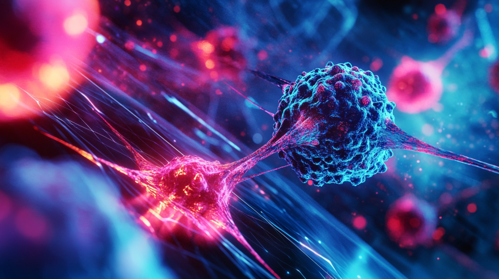

Учёные из ведущих мировых медицинских институтов объявили, что искусственный интеллект помог в разработке нового метода лечения рака.
Используя алгоритмы глубокого обучения, исследователи смогли выявить ранее неизвестные закономерности в генетическом коде опухолей, что привело к созданию более эффективных лекарств. В ходе исследований была применена новейшая технология машинного обучения, которая позволила анализировать огромные массивы данных пациентов. Новая терапия уже проходит клинические испытания, и предварительные результаты показывают значительное снижение рецидивов заболевания.
Одним из ключевых преимуществ нового подхода стало то, что ИИ смог предложить персонализированные схемы лечения, адаптированные под генетический профиль каждого пациента. Это позволило врачам точнее нацеливаться на опухоли, минимизируя побочные эффекты традиционных методов, таких как химиотерапия. Технология также сократила время разработки новых препаратов с нескольких лет до нескольких месяцев, что открывает перспективы для быстрого реагирования на новые виды рака.

Кроме того, исследователи планируют интегрировать эту систему с роботизированными хирургическими платформами, чтобы повысить точность операций по удалению опухолей. В сочетании с данными ИИ это может привести к созданию полностью автоматизированных медицинских процедур, где машины будут не только диагностировать, но и лечить рак на основе полученных данных. Учёные уверены, что в ближайшие годы подобные технологии станут стандартом в онкологии.